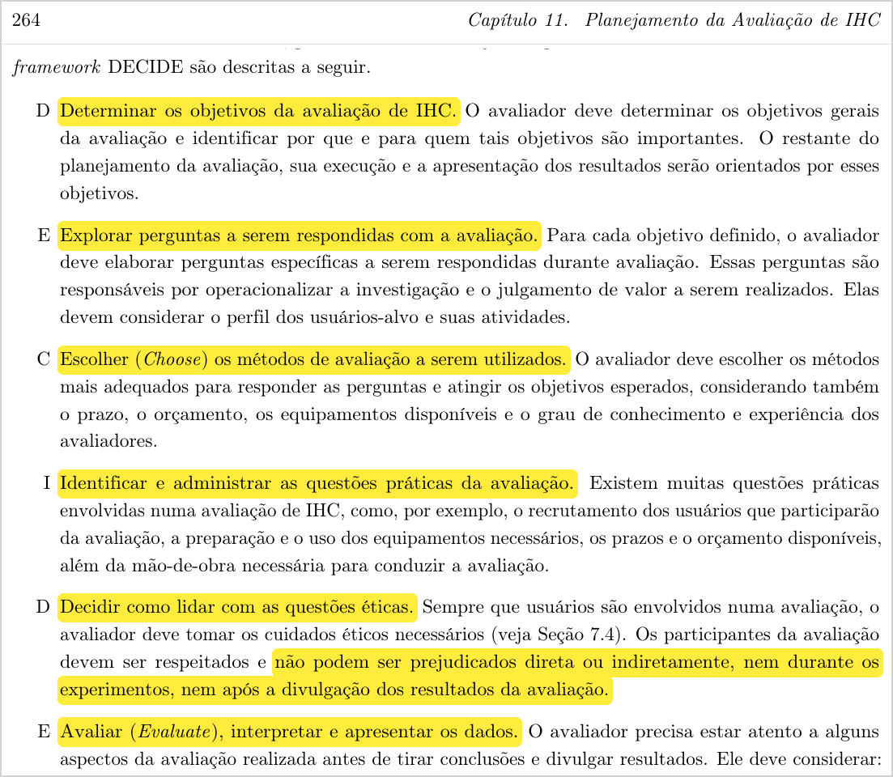
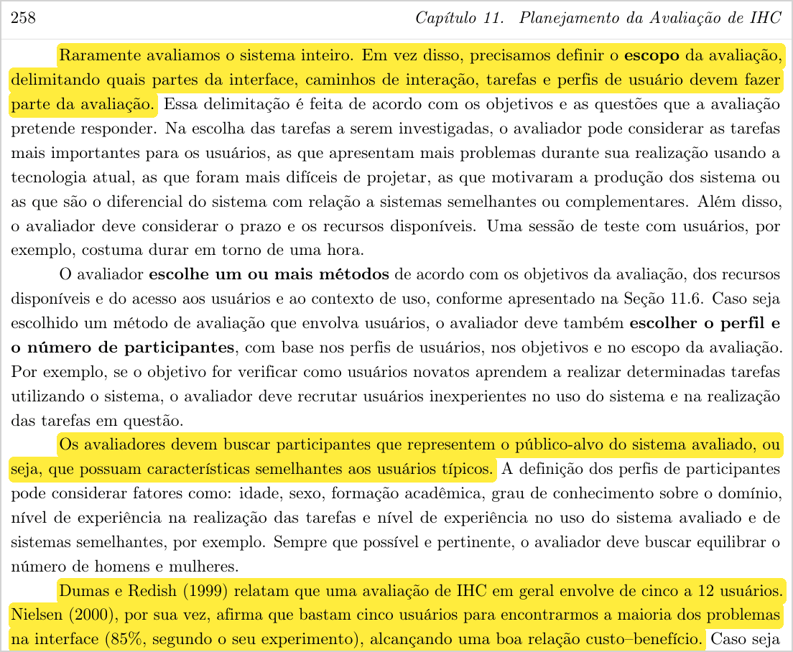

Histórico de Versão e Contribuição¶
| Data | Versão | Descrição | Autor(es) | Revisor(es) | Declaração de Uso de IA |
|---|---|---|---|---|---|
| 01/11/2026 | 1.0 |
Criação do planejamento individual da avaliação do Protótipo de Alta Fidelidade (TAR-03) via framework DECIDE, com amostragem fundamentada na teoria de Steve Krug e referências do livro-texto. | Lucas Araújo Lima | Arthur Mariani | Google Gemini: utilizado apenas para formatação em Markdown |
| 10/11/2026 | 1.1 |
Transição da plataforma de prototipação de alta fidelidade do Figma para protótipo em código navegável (HTML5, CSS3 e JavaScript), atualização do protocolo técnico de execução e adição de justificativa metodológica. | Lucas Araújo Lima | Arthur Mariani | Google Gemini: utilizado apenas para formatação em Markdown |
Planejamento da Avaliação do Protótipo de Alta Fidelidade (TAR-03)¶
Neste documento, apresenta-se o Planejamento da Avaliação do Protótipo de Alta Fidelidade referente à TAR-03: Planejamento de Rota Completa (Porta a Porta) por Destino com Indicação de Paradas e Previsão de Chegada. Trata-se do planejamento individual elaborado por Lucas Araújo Lima para orientar a avaliação formativa e empírica do protótipo digital interativo de alta fidelidade construído em HTML navegável (utilizando a stack web padrão: HTML5, CSS3 e JavaScript), representando a proposta de redesign da interface móvel da SEMOB-DF / DF no Ponto.
O protótipo de alta fidelidade incorpora os aprendizados colhidos na avaliação anterior em papel (Nível 2) e observa estritamente o Guia de Estilo estabelecido pelo Grupo 05 (paleta cromática com contraste WCAG AA, tipografia legível, alvos de toque mobile-first de no mínimo 48×48 px, botões padronizados na sintaxe [Verbo + Ação] e automação do cálculo de caminhada e telemetria via GPS). A avaliação será conduzida com usuários reais seguindo o Framework DECIDE (Barbosa et al., 2021, Seção 11.8, pp. 264–265), estruturado nas seis atividades interdependentes: Determinar objetivos, Explorar perguntas, Choose (Escolher) métodos, Identificar questões práticas, Decidir questões éticas e Evaluate (Avaliar, interpretar e apresentar dados).
Artefatos relacionados — fluxo da funcionalidade TAR-03 (Planejamento de Rota por Origem e Destino):
- Persona: Marcos Paulo Vieira
- Cenário: Cenário 3
- Análise de tarefas: TAR-03
- Storyboard: Storyboard 03
- Nível 1: avaliação do storyboard e da análise de tarefas: Planejamento da avaliação (não realizado) · Planejamento do relato (não realizado) · Relato dos resultados · Planejamento individual de tarefas · Questões práticas e éticas
- Nível 2: protótipo de papel (baixa fidelidade): Planejamento da avaliação · Planejamento do relato · Relato dos resultados
- Nível 3: protótipo de alta fidelidade: Planejamento da avaliação (esta página) · Planejamento do relato · Relato dos resultados
- Telas do protótipo de papel: telas no planejamento da avaliação
- Protótipo de alta fidelidade navegável: acessar o protótipo
1. D: Determinar os Objetivos da Avaliação¶
De acordo com Mayhew (1999 apud BARBOSA et al., 2021) e Barbosa et al. (2021), a avaliação do protótipo de alta fidelidade situa-se no Nível 3 do ciclo de vida da Engenharia de Usabilidade. Seu propósito central é inspecionar e validar empiricamente o projeto detalhado de telas interativas em condições visuais, estéticas e funcionais próximas ao software final antes da implementação definitiva em produção.
1.1 Objetivos Principais e Específicos¶
- Verificar a conformidade com o Guia de Estilo do Grupo 05: Avaliar se a aplicação das cores institucionais, hierarquia tipográfica, espaçamento de cards, ícones semióticos e botões de ação no padrão
[Verbo + Ação](ex.:[ 🧭 Iniciar Rota ],[ 🗺️ Trocar para Rota Alternativa ]) proporcionam reconhecimento imediato e previnem erros de toque no smartphone. - Validar a usabilidade e a eficiência do fluxo completo da TAR-03 no protótipo navegável: Medir o desempenho dos usuários ao planejar o deslocamento porta a porta (Samambaia Sul → SIA Trecho 3) a partir da busca direta na Home com detecção automática de origem via GPS, verificando se a meta preditiva do modelo KLM (redução de esforço e tempo) se confirma na interação real.
- Avaliar a clareza comparativa dos cartões de rota e indicação da melhor parada: Investigar se a distinção visual na interface entre a linha semiexpressa recomendada (
092.1) e a linha convencional (0.092) — exibindo tempo de caminhada até a parada recomendada, tempo de chegada do veículo via GPS, tarifa e horário final de chegada (ETA) — apoia a tomada de decisão rápida sem sobrecarga cognitiva. - Inspecionar a comunicabilidade do mapa interativo e dos mecanismos de contingência: Verificar se o usuário compreende no protótipo digital o trajeto tracejado a pé até a parada, o deslocamento em tempo real do ônibus com selo de atualização ("Atualizado há 10s"), o banner proativo de retenção viária na EPTG com troca de rota em 1 toque e a distinção visual por cores entre previsão GPS ao vivo (verde) e horário programado offline (cinza).
- Coletar métricas quantitativas e qualitativas para o produto final: Subsidiar ajustes finos de microinterações, modais e transições diretamente no código-fonte do protótipo em HTML antes da entrega final do projeto.
2. E: Explorar as Perguntas a Serem Respondidas¶
Para operacionalizar os objetivos traçados, foram formuladas seis perguntas investigativas que serão respondidas por meio da observação direta da interação no protótipo HTML e da entrevista pós-teste (Barbosa et al., 2021):
Tabela 1: Perguntas Investigativas para Avaliação do Protótipo de Alta Fidelidade (TAR-03)
| ID | Categoria / Foco | Pergunta Investigativa da Avaliação | Critério de Aceitação / Resposta Esperada no Protótipo HTML |
|---|---|---|---|
| QF01 | Conformidade com o Guia de Estilo e Home | Na tela inicial do protótipo em HTML, o participante reconhece imediatamente o card de localização atual via GPS e aciona a barra "Para onde você quer ir?" sem hesitação visual? | O participante clica/toca no campo de busca de destino em menos de 5 segundos e seleciona "SIA Trecho 3" no menu de autocompletar na primeira tentativa. |
| QF02 | Comparação de Rotas e Escolha da Parada | A hierarquia visual dos cartões de rota no protótipo (selo "Mais Rápida", tempo a pé em destaque, linha e ETA final) permite identificar qual opção garante chegada ao SIA antes das 08h00? | O participante compara os cards 092.1 (ETA 07h52) e 0.092 (ETA 08h08), verbaliza a escolha da linha 092.1 e clica em [ 🧭 Iniciar Rota ] sem erros. |
| QF03 | Rastreamento Ao Vivo e Caminhada no Mapa | Na tela do mapa interativo de alta fidelidade, o participante distingue com clareza o percurso tracejado a pé (4 min / 280m até a Parada QR 302 Conj. 4) e a posição em tempo real do ônibus? |
O participante identifica corretamente para qual parada deve caminhar e reconhece o indicador de telemetria ativa ("GPS ao vivo • Chega em 5 min"). |
| QF04 | Alerta de Retenção e Rota Alternativa em 1 Toque | Ao surgir o componente de alerta de retenção severa na EPTG (+14 min), o participante compreende o impacto no seu horário e aciona o botão [ 🗺️ Trocar para Linha 0.380 Agora ]? |
O participante lê a notificação de incidente e realiza a troca de rota em 1 clique/toque, sem precisar retornar à tela inicial para refazer a busca. |
| QF05 | Contingência de Falha de GPS (Cores e Status) | Diante do estado simulado de perda de sinal de satélite do veículo, o participante percebe a mudança cromática (de verde ao vivo para cinza programado) e consulta a grade horária offline? | O participante compreende que o rastreamento em tempo real caiu e aciona [ 🕒 Ver Horários Programados (Offline) ] com segurança. |
| QF06 | Satisfação Estética e Qualidade de Uso | Como o participante avalia o acabamento visual, o contraste de cores, a legibilidade e a fluidez das transições do protótipo em HTML em comparação ao sistema atual da SEMOB-DF? | O participante atribui avaliação positiva de satisfação subjetiva, destacando a interface como moderna, confiável e superior ao portal atual. |
Fonte: Elaborado por Lucas Araújo Lima (2026).
3. C: Choose (Escolher) os Métodos de Avaliação¶
O método selecionado para esta etapa é o Teste de Usabilidade (Observação de Uso Empírica em Ambiente Controlado) utilizando o protótipo interativo de alta fidelidade em código navegável (HTML5, CSS3 e JavaScript) (Barbosa et al., 2021, Seção 12.2.1, pp. 288–291; Barbosa et al., 2021, Seção 12.2.1).
- Justificativa Metodológica: Conforme a Tabela 12.10 de Barbosa et al. (2021), o teste de usabilidade possui adequação máxima (
+++) para avaliar a apropriação de tecnologia e identificar problemas de IHC em protótipos interativos de alta fidelidade. A execução direta em navegador web móvel/desktop proporciona realismo operacional superior: permite campos de texto reais com digitação e autocompletar dinâmico, renderização responsiva fiel ao motor de renderização do smartphone, temporizadores de telemetria reais via JavaScript e navegação sem falsos cliques ou limitações de ferramentas de design. Isso viabiliza a coleta rigorosa de tempo de tarefa, identificação de erros de navegação e avaliação precisa de satisfação do usuário. - Técnicas Complementares Combinadas:
- Protocolo Think Aloud (Pensar em Voz Alta): Durante a navegação pelas telas e componentes do protótipo em HTML, o participante será estimulado a verbalizar continuamente seu raciocínio, expectativas e eventuais dúvidas antes de cada toque/clique (Barbosa et al., 2021).
- Entrevista Pós-Teste Semiestruturada: Ao final da execução das tarefas no protótipo, o avaliador aplicará as perguntas investigativas (
QF01aQF06) para captar a percepção qualitativa sobre o design visual e a utilidade prática da solução.
4. I: Identificar e Administrar as Questões Práticas¶
4.1 Planejamento do Recrutamento dos Entrevistados: Fundamentação em Steve Krug e justificativa do número de participantes¶
O dimensionamento da amostra combina as orientações de Barbosa et al. (2021, pp. 258–259) sobre perfil, escopo e recursos com a proposta de testes pequenos e recorrentes de Steve Krug. Krug (2000, cap. 9) recomenda três ou quatro participantes por rodada para identificar os principais problemas e permitir a correção do produto antes de uma nova rodada. Assim, três participantes correspondem ao limite inferior dessa recomendação e são compatíveis com o prazo da disciplina:
- Quantidade de Participantes: Serão recrutados 3 participantes pertencentes ao perfil primário de passageiros do transporte público coletivo do Distrito Federal.
- Fundamentação Teórica (Barbosa et al., 2021, pp. 258–259): o perfil e o número de participantes são escolhidos com base nos perfis de usuários, nos objetivos e no escopo da avaliação. Nielsen (2000 apud BARBOSA et al., 2021) afirma que bastam cinco usuários para encontrar a maioria dos problemas na interface, e o livro observa que o tempo e os recursos disponíveis podem inviabilizar amostras maiores. Com base nisso:
- Detecção dos problemas mais graves: a amostra de 3 participantes busca revelar os problemas de usabilidade mais severos do fluxo avaliado, próxima da referência de cinco usuários de Nielsen (2000 apud BARBOSA et al., 2021).
- Agilidade de Consolidação e Reprojeto no Mesmo Ciclo: Testar com 3 usuários evita o acúmulo de observações repetitivas, permitindo que a equipe analise as gravações, consolide o relatório e aplique as correções diretamente no código-fonte do protótipo em HTML imediatamente após a rodada.
- Relação custo-benefício: Nielsen (2000 apud BARBOSA et al., 2021) associa amostras pequenas a uma boa relação custo–benefício; amostras maiores exigiriam tempo e recursos que o cronograma da disciplina não comporta (Barbosa et al., 2021, p. 259).
- Perfil dos 3 Participantes Recrutados:
- Jovens ou adultos (18 a 45 anos), estudantes ou trabalhadores que utilizam regularmente as linhas de ônibus da SEMOB-DF em deslocamentos pendulares no Distrito Federal e possuem familiaridade cotidiana com aplicativos móveis em smartphones Android/iOS, espelhando o perfil e as necessidades da persona primária Marcos Paulo Vieira ("Marquinhos").
4.2 Especificação do Protótipo de Alta Fidelidade em HTML Navegável (TAR-03)¶
O protótipo digital interativo foi desenvolvido com tecnologias web padronizadas (HTML5 semântico, CSS3 e JavaScript puro / Vanilla JS), executado em modo de visualização móvel (Mobile Viewport com largura de referência de 390 px) diretamente no navegador web do smartphone ou emulador desktop:
- Stack Tecnológica Adotada:
- HTML5: Estruturação semântica de cabeçalhos, formulários de busca, botões acessíveis e listas de rotas.
- CSS3: Implementação integral do Guia de Estilo (paleta cromática institucional da SEMOB-DF, tipografia, elevações/sombras de cards, áreas de toque mínimas de 48×48 px e animações de transição suaves).
- JavaScript (Vanilla JS): Gerenciamento de estados da interface (troca de telas sem recarregamento, simulação de GPS, autocompletar reativo de destino, cronômetro de telemetria "Atualizado há X segundos", ativação do alerta de retenção viária na EPTG e alternância para grade horária offline).
- Localização e Publicação:
- O protótipo reside no repositório oficial em
docs/prototipos/tar-03/index.htmle é publicado automaticamente via GitHub Pages, permitindo acesso universal por link web direto nos smartphones dos participantes. - Fluxo Interativo Completo da TAR-03:
- Tela 01 (Home SEMOB-DF Digital): Barra superior institucional com opção de alto contraste, card de geolocalização ativa ("📍 Origem: Samambaia Sul - QR 302"), campo de busca interativo "Para onde você quer ir?" com abertura de lista preditiva ao digitar "SIA" e seleção de "SIA Trecho 3".
- Tela 02 (Comparador de Rotas Porta a Porta): Cards estruturados conforme o Guia de Estilo, destacando com badge verde "Recomendada • Mais Rápida" a linha
092.1 (Semiexpresso)(🚶 4 min / 280m até Parada QR 302 Conj. 4•🚌 Passa em 5 min (GPS)•💰 R$ 5,50•🏁 Chegada: 07h52) em comparação ao card secundário da linha0.092 (Via EPTG)(🏁 Chegada: 08h08). - Tela 03 (Mapa de Navegação Ao Vivo e Painel Passo a Passo): Mapa vetorial detalhado exibindo a rota pontilhada azul de caminhada até a parada, o marcador animado do ônibus
092.1com badge verde "Ao vivo • Atualizado há 10s" e painel inferior com as etapas do trajeto. - Componentes de Contingência (TAR-03.3): Banner superior de alerta em tom semântico de atenção ("⚠️ Retenção severa na EPTG: +14 min. Linha 0.380 disponível em 3 min") com botão primário
[ 🗺️ Trocar para Linha 0.380 Agora ], e estado de queda de telemetria com selo cinza "Horário Programado (Sem sinal GPS)" e modal da tabela horária offline.
4.3 Papéis da Equipe e Infraestrutura Tecnológica¶
- Avaliador Facilitador / Condutor (Lucas Araújo Lima): Recepciona cada participante, apresenta o TCLE, contextualiza o cenário de uso da persona Marcos Paulo Vieira, entrega o roteiro das tarefas e conduz a entrevista pós-teste mantendo postura estritamente neutra (sem fornecer dicas de onde clicar).
- Avaliador Observador / Revisor (Arthur Mariani): Acompanha a sessão, verifica a captura de tela/áudio, cronometra o tempo de conclusão de cada sub-tarefa e registra hesitações, cliques em elementos não interativos ou desvios no fluxo do código HTML.
- Equipamentos e Ferramentas:
- Plataforma: Navegador web (Google Chrome / Safari) abrindo o link do protótipo em HTML hospedado no GitHub Pages (com cópia local salva em dispositivo como plano de contingência).
- Gravação: Software de captura de tela com áudio (OBS Studio / gravador nativo do sistema móvel) ou câmera focada na interação com a tela, preservando a privacidade facial do participante.
- Apoio Documental: Termo de Consentimento Livre e Esclarecido (TCLE) impresso/digital e planilha de coleta de métricas.
- Custo/Orçamento: R$ 0,00 (código aberto próprio, hospedagem gratuita no GitHub Pages e execução em navegadores padrão).
4.4 Cronograma das Sessões de Avaliação (Etapa 7)¶
Tabela 2: Cronograma Planejado para as Sessões de Teste de Usabilidade no Protótipo em HTML (TAR-03)
| Sessão / Atividade | Participante / Envolvidos | Perfil | Data e Horário Previstos | Duração Estimada | Local / Modalidade |
|---|---|---|---|---|---|
| Teste Piloto | Integrante interno do Grupo 05 | Avaliador de calibração | 10/11/2026 às 19h00 | 10 min | Presencial / Remoto síncrono |
| Sessão 01 | Participante 01 | Usuário cotidiano do STPC/DF (Perfil Marcos Paulo) | 11/11/2026 às 14h00 | 10 min | Presencial (UnB Gama / Samambaia) |
| Sessão 02 | Participante 02 | Usuário cotidiano do STPC/DF (Perfil Marcos Paulo) | 11/11/2026 às 14h30 | 10 min | Presencial (UnB Gama / Samambaia) |
| Sessão 03 | Participante 03 | Usuário cotidiano do STPC/DF (Perfil Marcos Paulo) | 12/11/2026 às 14h00 | 10 min | Presencial (UnB Gama / Samambaia) |
Fonte: Elaborado por Lucas Araújo Lima (2026).
4.5 Planejamento do Teste Piloto¶
Em estrita observância ao Item 11 do Checklist do Plano de Ensino e às recomendações de Barbosa et al. (2021, Seção 11.7.2, p. 260), antes da realização das sessões com os 3 usuários externos será executado um Teste Piloto:
- Objetivo do Teste Piloto: Verificar se todos os elementos interativos, formulários, transições de estado via JavaScript e modais do protótipo em HTML/CSS/JS estão funcionando sem falhas ou becos sem saída, testar o áudio e a gravação de tela, validar a clareza do enunciado das tarefas e aferir se a sessão cabe confortavelmente na janela de 10 minutos.
- Data de Realização: 10/11/2026 às 19h00, conduzido por Lucas Araújo Lima com o apoio de Arthur Mariani.
- Declaração Formal de Isenção dos Dados (Conformidade com o Item 12 do Checklist): Declara-se expressamente que todos os tempos, observações e gravações gerados durante o Teste Piloto destinam-se exclusivamente à verificação técnica do protótipo em HTML e calibração do protocolo, sendo integralmente descartados e jamais incluídos ou contabilizados no relato final dos resultados da avaliação.
5. D: Decidir como Lidar com as Questões Éticas¶
A condução dos testes de usabilidade em alta fidelidade obedecerá rigorosamente às diretrizes éticas da Resolução CNS nº 466/2012 e nº 510/2016, bem como aos quatro princípios bioéticos documentados em Questões Práticas e Éticas das Avaliações (Barbosa et al., 2021, Seção 7.4):
- Termo de Consentimento Livre e Esclarecido (TCLE): Antes de iniciar a sessão, cada um dos 3 participantes lerá e assinará (ou manifestará concordância gravada) o TCLE oficial do projeto, autorizando a captura da interação na tela e da voz para fins estritamente acadêmicos na UnB.
- Autonomia e Direito de Desistência: O participante será informado de que sua colaboração é voluntária e que pode interromper o teste ou retirar seu consentimento a qualquer momento, sem necessidade de justificativa e sem qualquer prejuízo.
- Não-Maleficência e Conforto Psicológico: O avaliador esclarecerá no início da sessão que o objeto em avaliação é exclusivamente a interface do protótipo em HTML, e nunca a habilidade do participante. Qualquer dificuldade de clique ou navegação será tratada como oportunidade de melhoria do design.
- Confidencialidade e Anonimato: Os dados pessoais serão protegidos, divulgando-se apenas o primeiro nome ou identificador codificado (
P01,P02,P03) e gravando-se prioritariamente a tela do dispositivo e o áudio.
6. E: Avaliar, Interpretar e Apresentar os Dados¶
Conforme preconizado por Barbosa et al. (2021), a etapa final do framework DECIDE envolve a triangulação de métricas quantitativas e evidências qualitativas:
- Métricas Quantitativas de Desempenho:
- Taxa de conclusão sem ajuda (%): Proporção dos 3 participantes que finalizam as sub-tarefas
TAR-03.1,TAR-03.2eTAR-03.3sem intervenção do facilitador. - Tempo de execução (segundos): Tempo despendido em cada sub-tarefa no protótipo HTML, permitindo comparar o desempenho empírico com a predição analítica do modelo KLM (
9,70 spara o fluxo principal de busca e seleção). - Contagem de erros / cliques incorretos: Quantidade de toques fora das áreas interativas (misclicks) ou escolhas equivocadas de rota.
- Análise Qualitativa e Escala de Severidade:
- As verbalizações do Think Aloud e as respostas às questões
QF01aQF06serão categorizadas e cruzadas com as diretrizes do Guia de Estilo. - Todo problema de usabilidade identificado será classificado segundo a Escala de Severidade de Nielsen (1994 apud BARBOSA et al., 2021) de 0 (Sem importância) a 4 (Catastrófico), definindo sua prioridade de correção no código do protótipo.
- Validade e Confiabilidade do Estudo (DECIDE):
- Validade Interna: Assegurada pela padronização do cenário, uso do mesmo link do protótipo HTML publicado no GitHub Pages para os 3 participantes e neutralidade do facilitador.
- Validade Ecológica: Promovida pela representação fiel das linhas reais do DF (
092.1,0.092e0.380), tarifas vigentes (R$ 5,50) e viewport móvel idêntico ao uso cotidiano em smartphones. - Apresentação dos Resultados: Consolidada no documento formal planejado em Planejamento do Relato dos Resultados da Avaliação do Protótipo de Alta Fidelidade (TAR-03).
7. Justificativa Metodológica da Adoção de HTML/CSS/JS em Substituição ao Figma¶
A decisão técnica e metodológica de implementar o protótipo de alta fidelidade da TAR-03 em HTML5, CSS3 e JavaScript puro, em substituição ao uso de ferramentas visuais proprietárias como o Figma, apoia-se em quatro pilares fundamentais:
- Fidelidade Funcional e Realismo Interativo Superior: Em uma tarefa complexa como a TAR-03 (planejamento porta a porta com GPS, autocompletar e alerta dinâmico de trânsito), ferramentas de design gráfico limitam-se a transições estáticas entre telas pré-configuradas. No protótipo em HTML/CSS/JS:
- O campo de busca de destino é um
<input>real onde o usuário digita no teclado do dispositivo e visualiza a lista reativa de sugestões (autocompletar verdadeiro). - Os contadores de tempo ("Atualizado há 10s") e previsões de chegada funcionam com cronômetros dinâmicos em JavaScript.
- O acionamento de rotas alternativas (
0.380) e o modo offline operam com controle real de estados da aplicação. - Aderência ao Guia de Estilo e Acessibilidade: A estilização direta em CSS3 permite validar o contraste de cores (WCAG AA), a hierarquia tipográfica e as áreas de toque móveis (mínimo de 48×48 px) diretamente no motor de renderização dos navegadores reais.
- Independência de Ferramentas Proprietárias e Custo Zero: Elimina qualquer restrição relacionada a cotas de chamadas, limitações de contas gratuitas ou dependência de conectores externos para compartilhamento de telas, assegurando autonomia completa de desenvolvimento para a equipe.
- Versionamento e Rastreabilidade Integral no Git:
Por ser composto por arquivos de texto puro (
.html,.css,.js), todo o protótipo é versionado nativamente no repositório do projeto, viabilizando associar a avaliação empírica a um commit exato e publicar o protótipo funcional diretamente via GitHub Pages sem necessidade de infraestrutura adicional.
8. Fundamentação Teórica e Prints de Referência Bibliográfica¶
Em atendimento ao rigor metodológico exigido no Plano de Ensino da disciplina, apresentam-se os registros visuais (prints das obras de referência) que fundamentam o uso do Framework DECIDE, do Teste de Usabilidade e do Teste Piloto:
8.1 O Framework DECIDE no Planejamento da Avaliação de IHC¶
Na Seção 11.8 (O Framework DECIDE, p. 264), Barbosa et al. (2021) sintetizam as seis atividades propostas por Sharp, Rogers e Preece (2002 apud BARBOSA et al., 2021) para estruturar avaliações de IHC:

Figura 1: Síntese das seis atividades interdependentes do Framework DECIDE
Fonte: BARBOSA et al. (2021, Seção 11.8, p. 264).
8.2 Escolha de Métodos de Observação e Teste de Usabilidade¶
Na Seção 11.8 e na Tabela 12.10 (p. 306), os autores demonstram a adequação dos métodos de observação e teste de usabilidade para avaliar problemas de IHC e apropriação de tecnologia em protótipos interativos:
Figura 2: Critérios para escolha do método de avaliação e administração de questões práticas no DECIDE
Fonte: BARBOSA et al. (2021, Seção 11.8, p. 264).
8.3 Obrigatoriedade e Finalidade do Teste Piloto¶
Na preparação da avaliação (Seção 11.7.2), a literatura enfatiza a execução do teste piloto para verificar equipamentos, materiais e roteiro antes da sessão real:

Figura 3: Fundamentação da execução do Teste Piloto para calibração prévia da avaliação
Fonte: BARBOSA et al. (2021, Seção 11.7.2, p. 260).
9. Telas do Protótipo Avaliado¶
As Figuras 4 a 9 mostram as telas do protótipo de alta fidelidade da TAR-03, também apresentadas no relato dos resultados da avaliação.
- Protótipo navegável: Acessar o protótipo da TAR-03
Figura 4: T1 Home e Origem GPS

Fonte: Elaborado por Lucas Araújo Lima (2026).
Figura 5: T2 Busca Preditiva ("SIA")

Fonte: Elaborado por Lucas Araújo Lima (2026).
Figura 6: T3 Comparador de Rotas

Fonte: Elaborado por Lucas Araújo Lima (2026).
Figura 7: T4 Mapa Ao Vivo (Linha 092.1)

Fonte: Elaborado por Lucas Araújo Lima (2026).
Figura 8: T5 Alerta de Retenção (+14 min)

Fonte: Elaborado por Lucas Araújo Lima (2026).
Figura 9: T6 Grade Horária Offline

Fonte: Elaborado por Lucas Araújo Lima (2026).
---¶
10. Fotos de Referência¶
As Figuras 10 a 13 mostram os trechos que fundamentam este artefato, recortados e grifados em amarelo diretamente do livro da disciplina (BARBOSA et al., 2021).
Figura 10: 11.8 Framework DECIDE
Fonte: BARBOSA et al. (2021, p. 264).
Figura 11: Representação de interface em alta fidelidade

Fonte: BARBOSA et al. (2021, p. 210).
Figura 12: 12.2.1 Teste de usabilidade: objetivo, atividades e medidas por tarefa

Fonte: BARBOSA et al. (2021, pp. 288–289).
Figura 13: 11.7.2 Escopo da avaliação, perfil e número de participantes

Fonte: BARBOSA et al. (2021, p. 258).
11. Referências Bibliográficas¶
- BARBOSA, Simone Diniz Junqueira; SILVA, Bruno Santana da; SILVEIRA, Milene Selbach; GASPARINI, Isabela; DARIN, Ticianne; BARBOSA, Gabriel Diniz Junqueira. Interação Humano-Computador e Experiência do Usuário. Rio de Janeiro: Autopublicação, 2021. ISBN 978-65-00-19677-1. (Capítulo 11, p. 245–266; Capítulo 12, Seção 12.2.1, p. 288–291).
- SALES, André Barros de. Plano de Ensino: Interação Humano Computador. Brasília: Universidade de Brasília, Faculdade UnB Gama (FCTE/UnB), 2026.
- KRUG, Steve. Don't Make Me Think! A Common Sense Approach to Web Usability. Indianapolis: New Riders, 2000. Cap. 9.